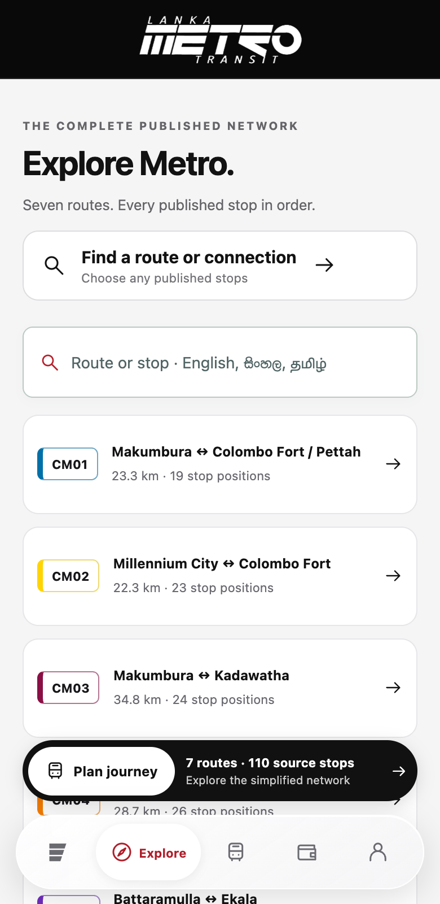

A series by Asith Wijenayake
What If?
Existing products.
A different possibility.
A place to follow a product question a little further. I rethink an existing experience, sketch the story, design the screens, and build something you can try.
What If / 001 · Transit
 LMT Go, reimagined.
LMT Go, reimagined.
A journey-first rethink of the everyday commute.
Explore the LMT Go redesign ↗



Independent explorations of existing products. Concepts, rather than commissioned client work.